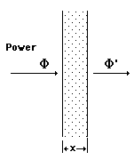
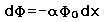
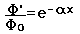
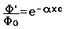

Light Absorption
Light passing through an optical system can be attenuated by absorption and by scattering. The exponential law of absorption is the basic working relationship, but specific terms such as absorbance, absorptivity, and transmittance are widely used.
|

|
The differential absorption can be expressed as

which upon integration from 0 to x gives the exponential law of absorption:

If the absorbing medium is a solution, the concentration c is included and the law becomes

|
|
Index |